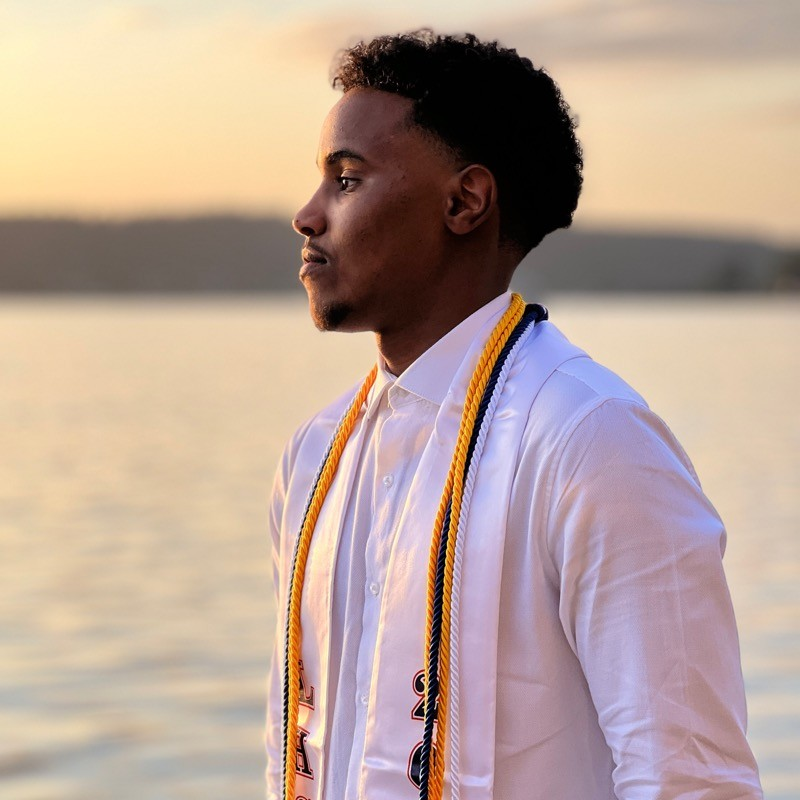

Click here below to check out my resume and technical projects, or scroll down to learn more about me.
View My Work
I'm a first-generation Somali-American college student and a rising junior at the University of Washington, majoring in Computer Science and graduating in 2027. Growing up, I was always curious about how technology works and how it can open doors for people like me who often don't see themselves represented in tech. That curiosity evolved into a passion for software engineering, where I focus on building tools that expand access, create opportunity, and make technology feel less intimidating.
This past summer, I interned as a Software Engineer at RSM, where I improved software delivery pipelines by implementing DORA metrics, worked on backend services in C#/.NET, and integrated data into Power BI dashboards to close visibility gaps. Beyond internships, I've led workshops in web development and AI ethics for over 50 students through the Changemakers in Computing program, emphasizing accessibility and inclusion, which reflect my belief that technology should empower everyone.
I've also been accepted into selective professional development programs like MLT Career Prep, where I tackled rigorous case studies and connected with leaders at companies like LinkedIn, Bloomberg, and TikTok. In addition, I'm active in NSBE and other campus communities that have provided me with mentorship, leadership opportunities, and a platform to uplift my peers.
Looking forward, I aspire to become a software engineer who not only builds reliable and impactful systems but also mentors the next generation especially underrepresented students so they see that they belong in these spaces too.